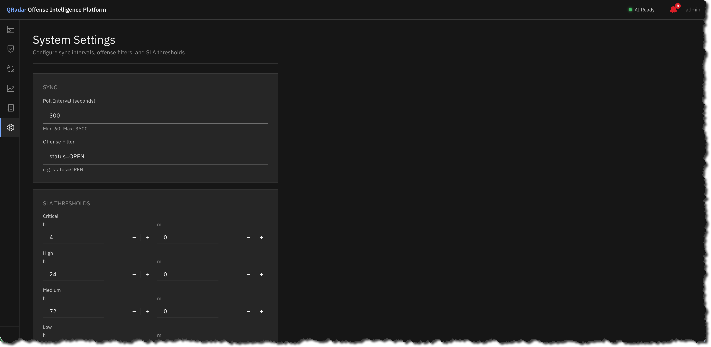
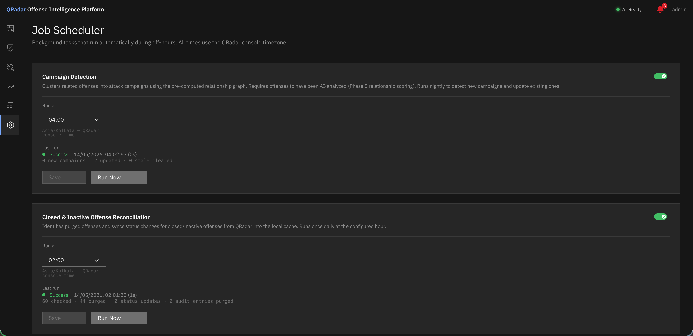

Settings¶
All settings are accessible from the Settings section in the left navigation bar.

System Settings — all configurable parameters grouped by function.QRadar Connection¶
Settings → QRadar Connection
| Setting | Description |
|---|---|
| Service Token | QRadar API token used for all QRadar API calls. Stored encrypted on disk. |
| Test Connection | Validates the token by making a live API call to QRadar |
To create a service token in QRadar: Admin → Authorized Services → Add Authorized Service. Assign the ADMIN role.
System Settings¶
Settings → System Settings
Sync¶
| Setting | Default | Description |
|---|---|---|
| Poll Interval (seconds) | 300 | How often the app syncs new offenses from QRadar. Min: 60, Max: 3600. |
| Offense Filter | status=OPEN |
QRadar API filter applied when fetching offenses. Standard QRadar filter syntax. |
SLA Thresholds¶
SLA thresholds define the maximum acceptable resolution time per severity band. Values are entered in hours and minutes.
| Severity | Default |
|---|---|
| Critical | 4h 0m |
| High | 24h 0m |
| Medium | 72h 0m |
| Low | 168h 0m (7 days) |
SLA Notifications¶
| Setting | Default | Description |
|---|---|---|
| At-risk threshold (%) | 80 | Notification fires when this % of the SLA budget is consumed. Range: 1–99. |
| Dismissed notification retention (days) | 7 | Dismissed notifications older than this are auto-purged. |
Audit Trail¶
| Setting | Default | Description |
|---|---|---|
| Retention (days) | 90 | Audit trail entries for closed/purged offenses are purged after this many days. Minimum: 30. Open offense trails are never purged. |
Attachments¶
| Setting | Default | Description |
|---|---|---|
| Max Attachment Size (MB) | 5 | Maximum size per uploaded file. Range: 1–50 MB. |
AI Event Sampling¶
Controls how much event data is fetched from QRadar and included in the AI analysis prompt. More data = more context for the model, but longer inference time.
| Setting | Default | Description |
|---|---|---|
| Offense event limit | 10 | Max rows from the INOFFENSE AQL query (events directly tied to the offense). Range: 1–100. |
| Source event limit | 15 | Max rows from the source activity timeline query. Range: 1–100. |
| Offense max window (hours) | 24 | Cap on the offense event query lookback from last_updated. Range: 1–168. |
| Source lookback (hours) | 24 | How far back from last_updated to search source activity. Range: 1–168. |
AI Inference¶
| Setting | Default | Description |
|---|---|---|
| Inference Timeout (seconds) | 600 | Maximum time to wait for the LLM to respond. Increase if analyses are timing out on slower hardware. Range: 60–3600. |
Tip
At approximately 1 token/second (typical for CPU-only deployment), 600 seconds allows ~600 tokens of output. The full analysis uses up to 2200 tokens. If analyses are timing out, set this to 900 or higher.
Auto-Triage¶
Automatically queue new offenses for AI analysis when they meet the configured thresholds.
| Setting | Default | Description |
|---|---|---|
| Enabled | Off | Toggle auto-triage on/off |
| Minimum Magnitude | 5 | Only queue offenses at or above this magnitude (0–10) |
| Minimum Severity | 7 | Only queue offenses at or above this severity (0–10) |
| Match condition | Either (OR) | Either: queue if magnitude OR severity meets threshold. Both: require both thresholds to be met. |
Diagnostics¶
| Setting | Default | Description |
|---|---|---|
| Verbose Logging | Off | Write full AI prompts to app.log on every inference call. Enable only when debugging AI output — increases log volume significantly. |
SOP Templates¶
Settings → SOP Templates
Manage reusable investigation playbooks. Each template defines a set of tasks that can be loaded onto any offense with one click.
| Field | Description |
|---|---|
| Name | Descriptive template name |
| Offense Type | Optional: match by QRadar numeric offense type ID |
| Name Pattern | Optional: match when the offense description contains this text (case-insensitive) |
| Tasks | One task per line |
See Investigation Workspace → SOP Templates for full details.
Job Scheduler¶

Job Scheduler — enable, schedule, and manually trigger background jobs.Settings → Job Scheduler
Configure and manage background jobs that run on a nightly schedule.
| Job | Default time | Enabled by default |
|---|---|---|
| SLA Breach Checker | 00:00 | Yes |
| Closed Offense Reconciliation | 02:00 | No |
| MITRE ATT&CK Tagger | 03:00 | No |
| Campaign Detection | 04:00 | Yes |
For each job you can: - Enable / disable - Change the run hour (0–23, local appliance time) - Click Run Now to trigger immediately - View last run time, duration, status, and summary
MITRE ATT&CK¶
Settings → MITRE ATT&CK
| Action | Description |
|---|---|
| Build Database | Download and parse the current ATT&CK STIX 2.1 bundle from MITRE |
| Upload Bundle | Upload a locally-downloaded ATT&CK bundle (for air-gapped environments) |
| Category Mappings | View and manage the team's shared QRadar category → ATT&CK technique knowledge base |
See MITRE ATT&CK for full details.
Model Management¶
Navigate to Model (top navigation bar icon).
| Action | Description |
|---|---|
| Download Model | Downloads Qwen3.5-9B Q5 (~6.1 GB) from Hugging Face to the appliance |
| Model status | Shows whether the model is loaded and the llama.cpp server is ready |
| AI Ready indicator | Green dot in the top-right header when the model is running and accepting requests |
For air-gapped environments: copy the model file manually to /opt/app-root/store/models/ inside the app container, then click Refresh.